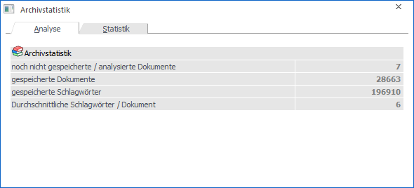
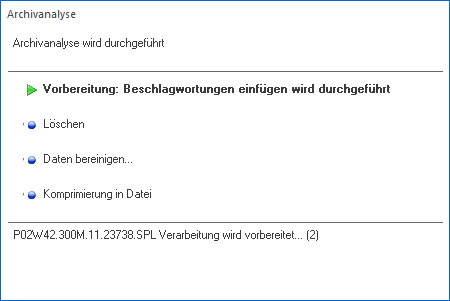
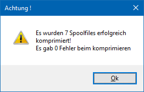
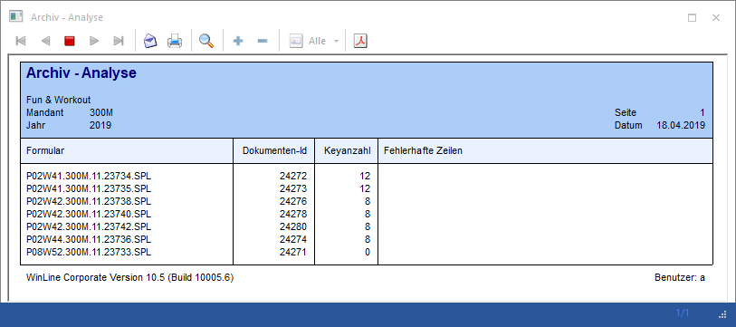
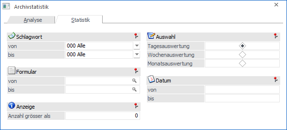
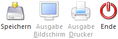

Über den Menüpunkt…
1 WinLine START
1 Abschluss
1 Archivanalyse
… können 2 unterschiedliche Aktionen ausgeführt werden:
ü Archivanalyse
Alle neu zur
Archivierung anstehenden Dokumente werden in das Archiv übernommen.
ü Archivstatistik
Mit der
Archivstatistik kann eine Liste aller vorhandenen Archiveinträge ausgegeben
werden.
Register "Archivanalyse"

In dem Register "Analyse" zuerst eine kurze Statistik über die vorhandenen Archiv-Einträge gezeigt:
Ø noch nicht gespeicherte / analysierte Formulare
Hier wird die Anzahl der Formulare angezeigt, die zur Archivierung vorbereitet sind, aber noch nicht in das Archiv übernommen wurden. D.h. das Dokument an sich befindet sich bereits im Archiv, kann aber nicht über die Beschlagwortung gefunden werden.
Ø gespeicherte Formulare
Hier wird die Anzahl der Formulare angezeigt, die im Archiv gespeichert sind.
Ø gespeicherte Schlagwörter
An dieser Stelle wird die Anzahl der Schlagwörter angezeigt, die im Archiv vorhanden sind.
Ø Durchschnittliche Schlagwörter / Dokument:
Hier wird angezeigt, wie viele Schlagwörter durchschnittliche in einem Formular vorhanden sind.
Durch Anklicken des Buttons "Speicherrn" werden die vorbereiteten Dokumente analysiert und die Beschlagwortungen in das Archiv übernommen. Der Fortschritt hierüber wird über ein eigenes Statusfenster dargestellt.

Zum Abschluss erscheint ein Hinweisfenster, welches anzeigt, wie viele Dokumente analysiert worden sind.

Zusätzlich wird ein Protokoll erzeugt (kann über Despoolen angesehen werden), auf welchem dann ggfs. auch Fehlermeldungen enthalten sein können. Zu jeder Fehlermeldung gibt es auch eine Anmerkung, anhand derer eine Fehleranalyse bzw. Fehlerkorrektur vorgenommen werden kann.

Register "Statistik"

Durch Anwahl des Registers "Statistik" kann eine Liste aller vorhandenen Schlagwörter ausgegeben werden, wobei folgende Einschränkungen vorgenommen werden können:
Ø Schlagwort von / bis
Aus der Auswahllistbox kann eines der definierten Schlagwörter ausgewählt werden. Sollen alle Schlagwörter ausgewertet werden, muss die Option "000 - Alle" verwendet werden.
Ø Formular von / bis
Hier können die Formulare eingeschränkt werden, welche ausgewertet werden sollen (z.B. "P02W44" für Rechnungen). Durch Drücken der F9-Taste kann nach allen angelegten Formularen gesucht werden.
Ø Anzahl größer als
An dieser Stelle kann eine Selektion aufgrund der gleichlautenden Schlagwörter pro Tag / Woche / Monat (Abhängig der Einstelllung "Auswahl") durchgeführt werden.
Ø Auswahl
Bei der Auswahl kann zwischen verschiedenen Möglichkeiten gewählt werden:
ü Tagesauswertung
Bei der
Tagesauswertung werden alle Schlagwörter aufgelistet, die pro Tag archiviert
wurden. Wurde ein Schlagwort (z.B. der Kunde "Annas Sportwelt") mehrmals
archiviert, wird in der Spalte "Anzahl (täglich)" die Zahl angedruckt, wie oft
dieses Schlagwort archiviert wurde.
ü Wochensauswertung
Bei der
Wochenauswertung werden alle Schlagwörter auf Wochen zusammengefasst und die
Anzahl der archivierten Schlagwörter ausgewiesen.
ü Monatsauswertung
Bei der
Monatsauswertung werden alle Schlagwörter auf Monate zusammengefasst und die
Anzahl der archivierten Schlagwörter ausgewiesen.
Ø Datum
An dieser Stelle kann eine Selektion auf den auszuwertenden Zeitraum erfolgen. Die Angabe des Zeitraums ist hierbei abhängig von der Einstellung "Auswahl".
ü Tagesauswertung
Es kann der
Zeitraum (datumsmäßig) für die Auswertung eingeschränkt werden.
ü Wochenauswertung
Es kann der
Zeitraum (wochenmäßig) für die Auswertung eingeschränkt werden. Zusätzlich dazu
kann noch ausgewählt werden, für welches Jahr die Auswertung erfolgen soll.
ü Monatsauswertung
Es kann der
Zeitraum (monatsmäßig) für die Auswertung eingeschränkt werden. Zusätzlich dazu
kann noch ausgewählt werden, für welches Jahr die Auswertung erfolgen soll.
Buttons

Ø Speichern (nur im Register "Analyse" anwählbar)
Durch Anklicken des Button "Speicherrn" werden die vorbereiteten Dokumente analysiert und die Beschlagwortungen in das Archiv übernommen.
Ø Ausgabe Bildschirm (nur im Register "Statistik" anwählbar)
Mit Hilfe des Buttons "Ausgabe Bildschirm" oder der Taste F5 wird die Auswertung am Bildschirm ausgegeben.
Ø Ausgabe Drucker (nur im Register "Statistik" anwählbar)
Durch Anwahl des Buttons "Ausgabe Drucker" wird die Auswertung am Drucker ausgegeben.